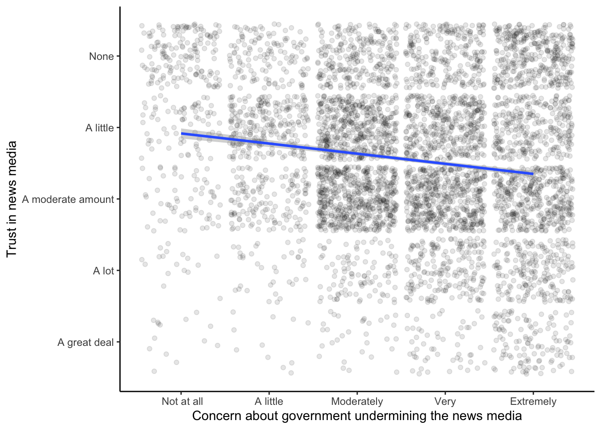

library(tidyverse)
library(anesr)
data(timeseries_2020)
my_data_complete <- timeseries_2020 |>
select(trust = V201377,
threat = V201376) |>
haven::zap_labels() |>
filter(if_all(everything(), ~ . >= 0)) |>
mutate(distrust = 6 - trust)Lab 4: Analysis
You will start this session with your cleaned data ready to use in R. By the end of the session you will have computed the correlation statistic, thought about how to interpret your finding, and be ready to present and write up your project.
Goals
- Understand what the correlation statistic quantifies
- Perform the appropriate correlational analysis on your data
- Interpret the results
Correlation
Running with my example from last week, I made a data.frame with just the two variables I needed; filtered the data down to complete, valid responses; and recoded the trust item so higher scores indicate greater distrust. To refresh your memory, here’s the setup and data preparation pipeline from start to finish:
The correlation statistic
The correlation statistic can be computed with a single line of code, as you’ll see. But it’s important to understand the math happening behind the scenes.
If you need to refresh your memory from a past statistics class, refer to the correlation statistic Appendix.
Computing a correlation
The correlation between two variables can be found using the cor() function.
cor(x = my_data_complete$threat,
y = my_data_complete$distrust)[1] -0.4955168If you got an answer of NA instead of a number, it is probably because your data has some missing data. You just need to tell cor() to only use data for which both pairs of values are nonmissing:
cor(x = my_data_complete$threat,
y = my_data_complete$distrust,
use = "pairwise.complete.obs")[1] -0.4955168The cor.test() function goes further than cor(), giving you the \(p\)-value necessary for determining statistical significance1 and some other information about the correlation.
cor.test(x = my_data_complete$threat,
y = my_data_complete$distrust)
Pearson's product-moment correlation
data: my_data_complete$threat and my_data_complete$distrust
t = -51.687, df = 8209, p-value < 2.2e-16
alternative hypothesis: true correlation is not equal to 0
95 percent confidence interval:
-0.5116630 -0.4790208
sample estimates:
cor
-0.4955168 Visualizing a correlation
Lastly, let’s make a scatterplot visualizing the correlation.
my_data_complete |>
ggplot(aes(x = threat, y = distrust)) +
geom_point(position = position_jitter(width = 0.45, height = 0.45, seed = 1),
alpha = 0.1) +
scale_x_continuous(breaks = 1:5,
labels = c(" Not at all", "A little", "Moderately", "Very", "Extremely")) +
scale_y_continuous(breaks = 1:5,
labels = c("A great deal", "A lot", "A moderate amount", "A little", "None")) +
labs(x = "Concern about government undermining the news media",
y = "Trust in news media") +
theme(panel.background = element_blank(),
axis.line = element_line())
Most of that will look familiar from the previous plots we made. The only major difference is that instead of making a histogram I’m making a scatterplot, for which the “geometry” is points rather than histogram bars. Therefore I use geom_point() rather than geom_histogram() for the geometry layer. One new element is the position = position_jitter() part inside geom_point(). Its purpose is to add some random noise to each individual data point, moving it to the left or right a little bit along the x-axis and up or down a little along the y-axis. This is helpful here since there are many data points but only 5 possible answers along each axis. Try making the graph without including the jitter; it’ll just look like a grid of 25 points. Any pattern in the data will be impossible to see. It may seem counterintuitive to change the data by adding randomness, but for the purposes of the visualization, doing so actually makes any patterns easier to see.
Interpreting your findings
Remember, a correlation quantifies the general quantitative relationship between two sets of numbers; people’s answers to your perceived threat question are associated with their answer to the distrust question to the extent indicated by your correlation coefficient. To fully and fairly interpret this for your presentation and report you’ll need to consider a number of things:
- What features of how the questions were asked might have affected people’s answers?
- What, if anything, about the context in which the questions were asked might have influenced people’s answers?
- How does it fit with the previous research you read about, and with your intuition about how the variables should be related?
Remember that, by convention, psychologists generally use \(\alpha = .05\) as the criterion for statistical significance, meaning that if our data has less than a 5% chance of occurring under the null hypothesis we reject the null and tentatively accept the alternative hypothesis that the variables are associated.↩︎